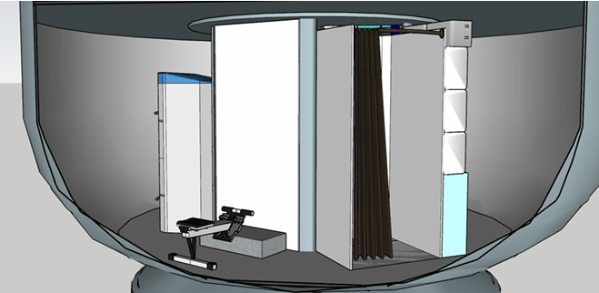
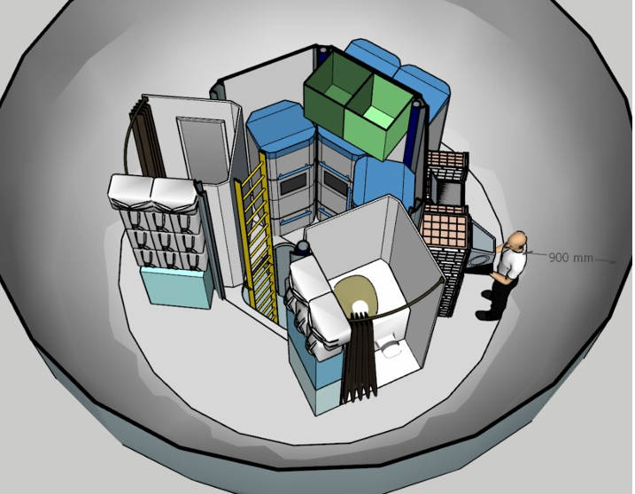
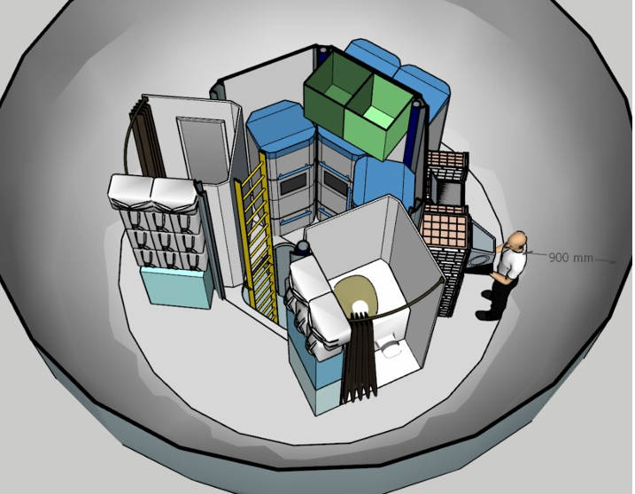

Cryonix
Lat: 3.6608° Lon: 138.12731°
Home
Housing
Laboratory
Suitports
Translation Paths, Ladder Access &
Airlock/Suitport Access
Designed for safe and efficient movement throughout the habitat, these systems provide secure internal pathways, vertical mobility via ladders, and controlled entry/exit points for extravehicular activities. Airlocks and suitports ensure the integrity of the habitat’s environment while allowing crew members to conduct surface operations on Mars safely.
 

Live
Live
Live